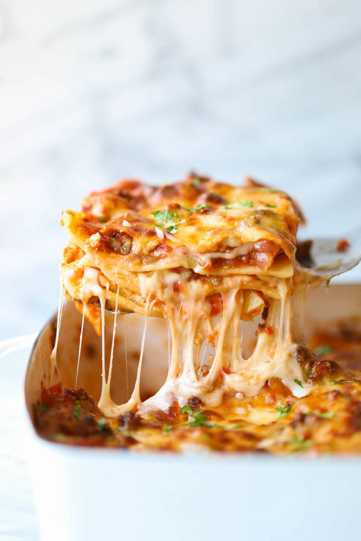

Lasagna

Easiest home made lasagnas
Everyone loves a good lasagna, right? It's a great way to feed a crowd and a perfect dish to bring to a potluck. It freezes well. It reheats well. Leftovers will keep you happy for days.
Simply Recipes reader Alton Hoover sent me his favorite recipe for lasagna which he has been cooking since his college days. Alton's original recipe created enough lasagna for a small army so I halved it. What is posted here will easily serve eight people.
Ingredients
- 2 teaspoons extra virgin olive oil
- 1 pound ground beef chuck
- 1/2 medium onion, diced (about 3/4 cup)
- 1/2 large bell pepper (green, red, or yellow), diced (about 3/4 cup)
- 2 cloves garlic, minced
- 1 (28-ounce)can good-quality tomato sauce
- 3 ounces tomato paste (half a 6-ounce can)
- 1/2 pound dry lasagna noodles (requires 9 lasagna noodles - unbroken)
- 5 ounces ricotta cheese
Steps
- Put pasta water on to boil
- Brown the ground beef
- Cook the bell pepper, onions, garlic, add back the beef
- Transfer to medium sized pot, add tomatoes and remaining sauce ingredients to build the sauce
- Boil and drain the lasagna noodles
- Heat the oven to 375°F and assemble the lasagna